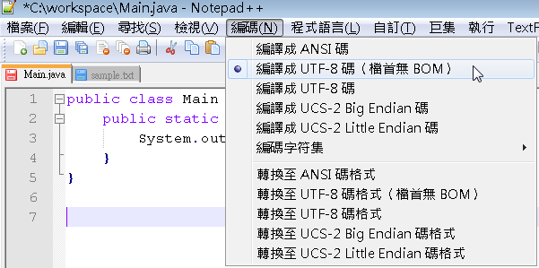
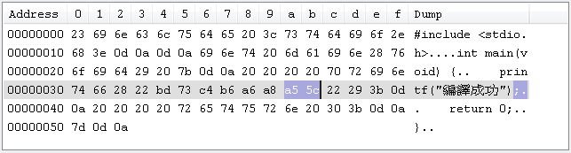

|
|
很令人訝異的事情是，當被問及「你現在編輯的原始碼檔案是什麼編碼？」，多數的程式設計人員都答不出來。 如果你在正體中文Windows中開一個純文字檔案，用「記事本」編輯的話，應該是用MS950來處理原始碼中字元的儲存，現在許多Linux系統，預設 都是使用UTF-8編碼，所以在這些Linux直接使用vi編輯原始碼的話，預設應該就是UTF-8，如果是在整合開發環境（IDE）中，則要視IDE的 設定，有些IDE預設是使用作業系統編碼，有些IDE是預設使用UTF-8，如果在IDE中，預設是用Big5的編輯器，結果開啟UTF-8的原始碼，也 會是亂碼，你必須指定編輯器使用正確的編碼來開啟原始碼。 這有什麼問題呢？以Java而言，在正體中文Windows中，如果你用記事本編輯原始碼： public class Main {
如果你直接如下編譯：
那麼就會編譯成功，不過，編譯器是使用哪種編碼來解譯原始碼呢？答案是作業系統預設編譯，正體中文Windows中，如果你用記事本編輯原始碼，原始碼檔案是用MS950儲存，而編譯器採用作業系統編碼編譯，所以就不用任何指定，就可以正確編譯。 同樣地，在預設編碼為UTF-8的Linux中，如果你用vi編輯原始碼，原始碼檔案是用UTF-8儲存，而編譯器採用作業系統編碼編譯，所以就不用任何指定，就可以正確編譯。 如果你用記事本轉存為「Unicode」或「Unicode big endian」編碼，那你要如何編譯？答案是指定-encoding告知編譯器原始檔案的編碼：
如果你用記事本轉存為「UTF-8」編碼，那你要如何編譯？答案是無法編譯，即使你指定了-encoding為UTF-8也一樣...
在 UTF-8 中談過，因為Windows的記事本存成UTF-8時，會在檔首加上BOM，javac編譯器並不處理BOM，只會視為不合法字元，如果你要將原始碼存為UTF-8，必須使用可存為檔首無BOM的編譯器，例如 NotePad++。  如此指定-encoding為UTF-8進行編譯，就可以編譯成功。 如果你用gcc編譯一個C原始碼： #include <stdio.h> 會得到錯誤訊息：
如果你將原始碼中的「成功」改為「OK」，編譯就會成功，為什麼？檢視原始碼的十六進位碼：  「功」這個字儲存為a5、5c兩個位元組，而5C在ASCII字元表中，就是\字元，也就是說，gcc看到了\字元，以為是略過（escape）字元，但下一個字元是"，結果組成了\"，因此gcc以為"沒有成對，因此編譯失敗，這就是著名的「許功蓋」問題。 如果將C原始碼存為UTF-8再直接編譯，則執行結果會出現亂碼：
你只是將字元的位元組改為另一組位元，所以編譯可以成功，但執行時的Console對這組位元並沒有對應實際可辨識的字元，所以就是亂碼，你必須如下指定：
不同語言辨識或指定原始碼編碼的方式並不相同，可以進一步參考： 甚至在不同環境中也會有不同方式，可參考： |